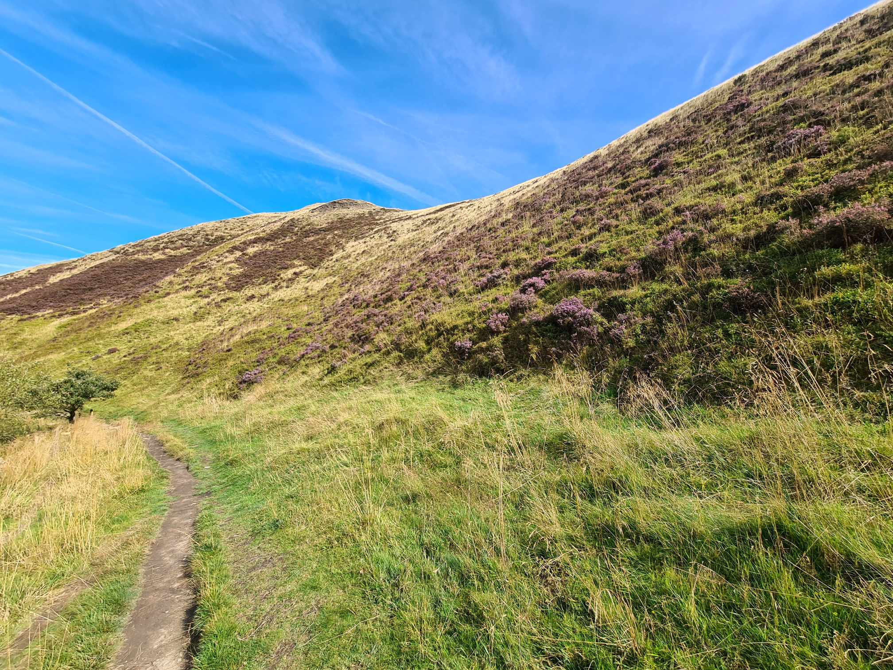
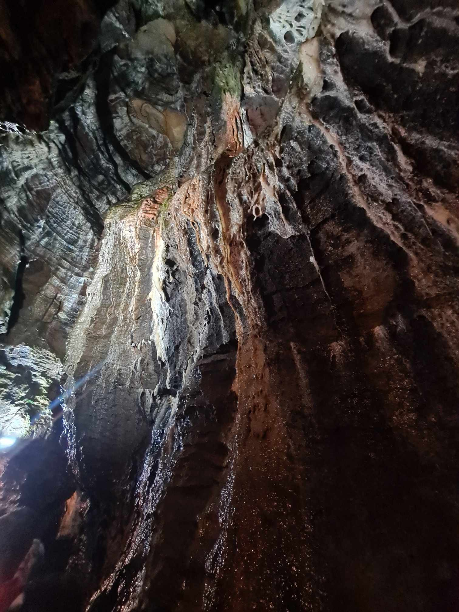
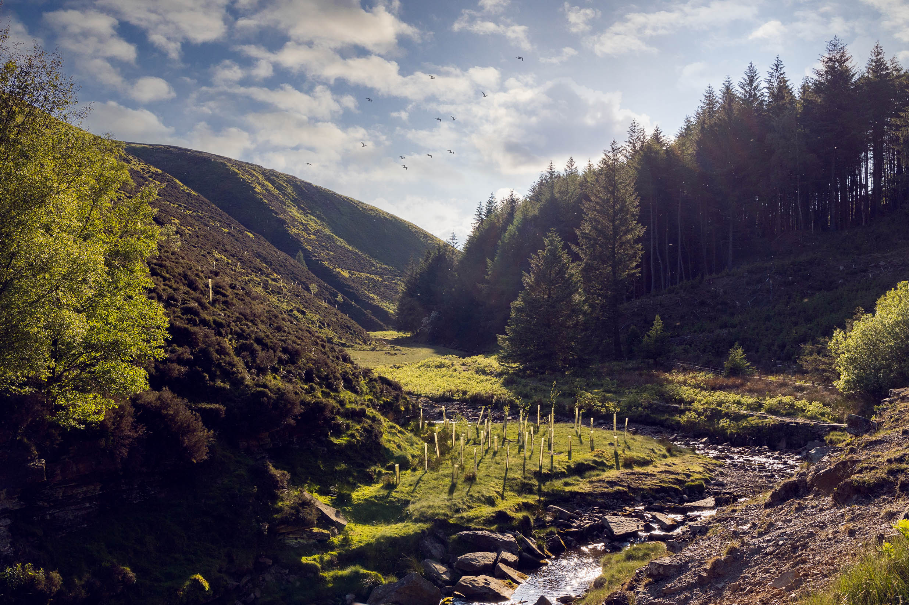
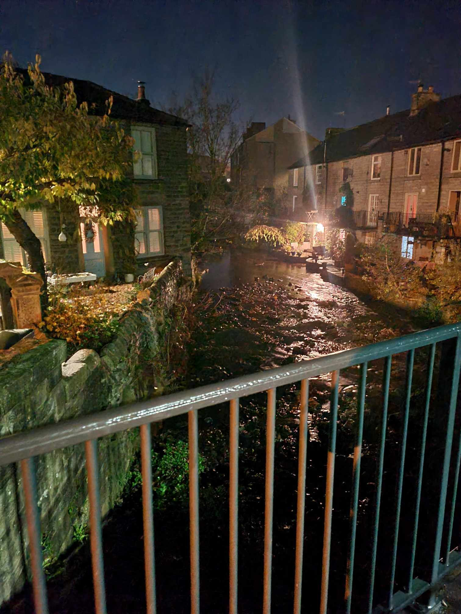
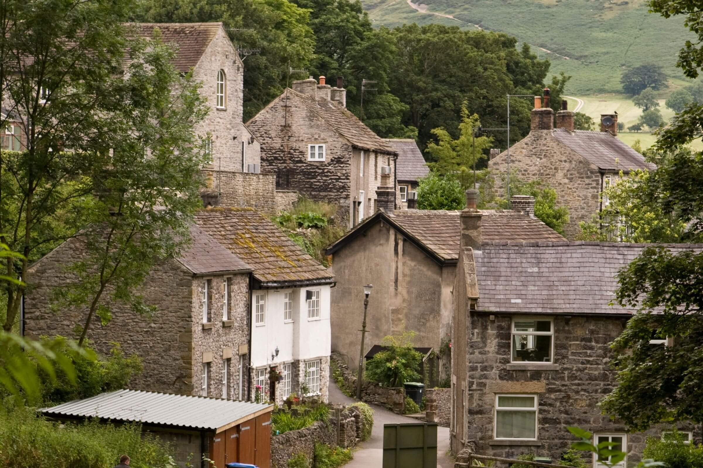

Edale & Mam Tor
oh heck
is big
Find out more... Blue John Cavern
the john part is french
wow look at those stalagtites
Find out more... Glossop & Snake Woodland
watch out for snakes y'all
ssssssss
Find out more... Hayfield & Kinder Scout
dont go when its rainy
it gets so fucking muddy and you literally cannot do it without crawling through mud
Find out more... Castleton & Hope Valley
best town in peak district
(is it a town or a village??)
Find out more... Buxton
havent been
looks nice tho
Find out more...